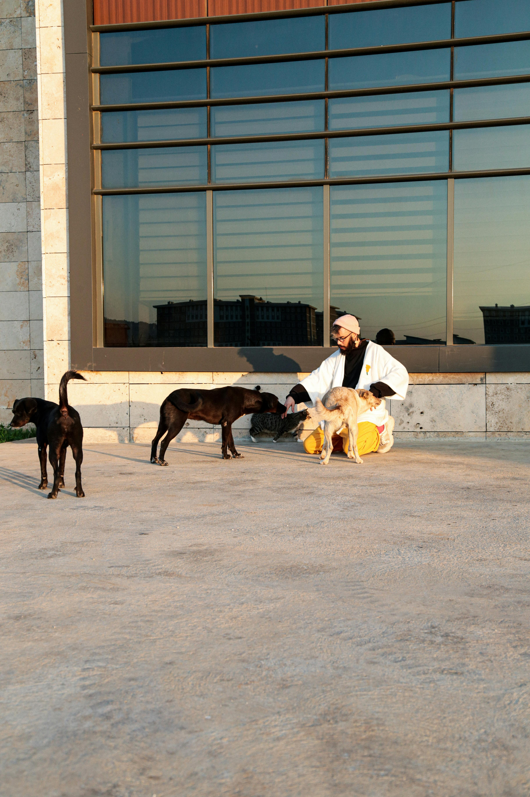

Projetos em andamento
Projeto Patas Felizes
Resgate e reabilitação de cães abandonados em áreas urbanas.
 Voluntariado
Adoção
Voluntariado
Adoção
Projeto Gatinhos do Bem
Cuidados veterinários e adoção responsável de gatos resgatados.
 Saúde Animal
Adoção
Saúde Animal
Adoção
Como ser voluntário
Você pode se inscrever para ajudar nos cuidados, transporte, divulgação ou eventos. Basta acessar a página de Cadastro e preencher o formulário.
Como doar
Ajude a manter nossos projetos ativos! Aceitamos doações via Pix, transferência bancária ou presencialmente em nossos eventos.
- Pix: doacoes@ongamigao.org.br
- Banco do Brasil - Agência 1234 - Conta 56789-0
- Doe ração, medicamentos ou tempo!